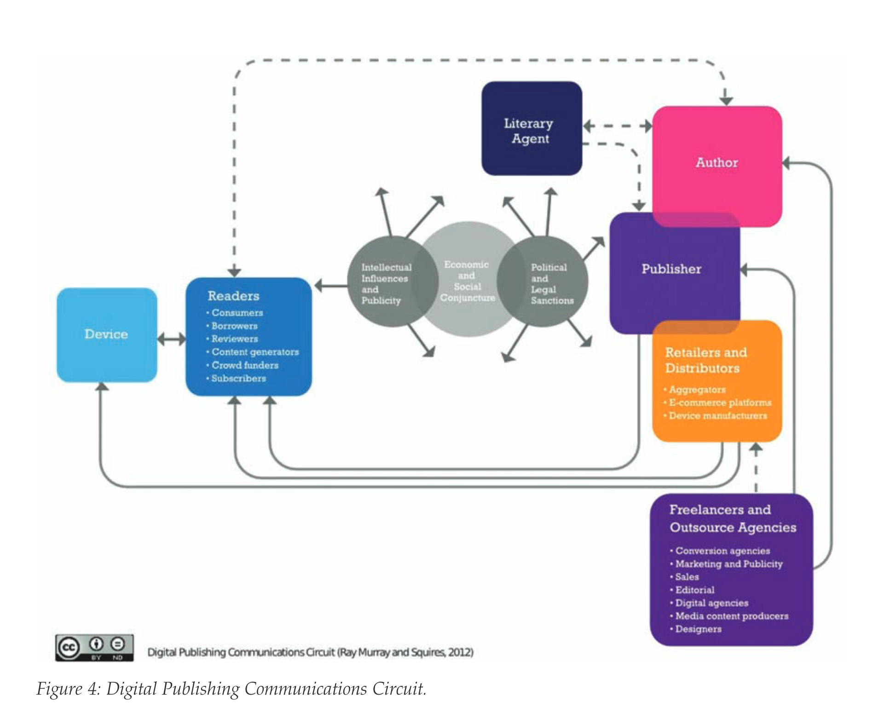

class: middle # The digital publishing communications circuit <hr> ### Matthew J. Lavin ### Clinical Assistant Professor of English and Director of Digital Media Lab ### University of Pittsburgh ### November 2018 --- class: middle <hr> ### The publishing value chain has remained relatively consistent since the invention of the printing press, and Robert Darnton’s influential model of the communications circuit of the book ... has been a largely accurate representation of the publishing industry until the late twentieth century (3). <hr> --- class: middle <hr> ### The human experience of how we produce, disseminate and perceive text is now, however, being irrevocably transformed by digital technologies (3). <hr> --- class: middle # Focused Free-write: <hr> #### _To begin this activity, the class will count off by fives. Remember your number, as it will indicate one of five topics you should write about._ <hr> #### Using a sheet of paper, write a brief response to the following idea: Murray and Squires argue that changes to publishing in the twenty-first century requires a "redrawing of the book communications circuit" to demonstrates "some of the radical disruptions and disintermediations that are occurring in the digital age" (19). Focusing on __(1) Authors__, __(2) Publishers__, __(3) Freelancers and Outsourcing__, __(4) Retailers and Distributors__ or __(5) Readers and Devices__, describe something important Murray and Squires bring up. Why is this change significant? What have Murray and Squires left out of their discussion of this topic that might be interesting to investigate? Take note of specific page numbers from the reading where you find an idea. If you finish writing before your classmates, you can use the time to prepare your thoughts for class discussion. <hr> --- class: middle <hr> ### Darnton's Communications Circuit <hr> --- class: middle <hr> ### Late 20th-Century Communications Circuit <hr> --- class: middle <hr> ### Self-Publishing Communications Circuit <hr> --- class: middle <hr> ### Digital Publishing Communications Circuit <hr>  --- class: middle <hr> ### Digital Publishing Communications Circuit (Readers) <hr>